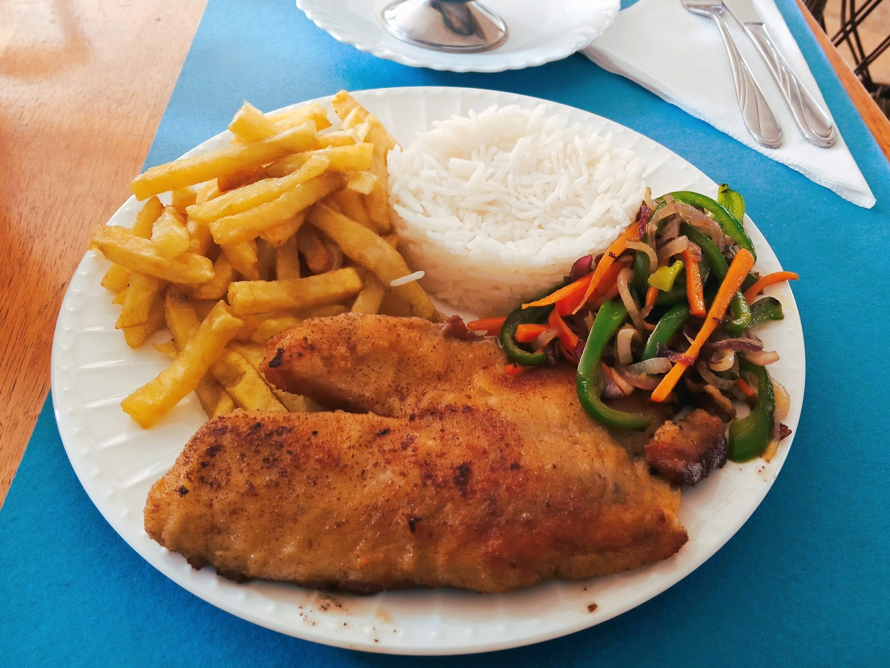
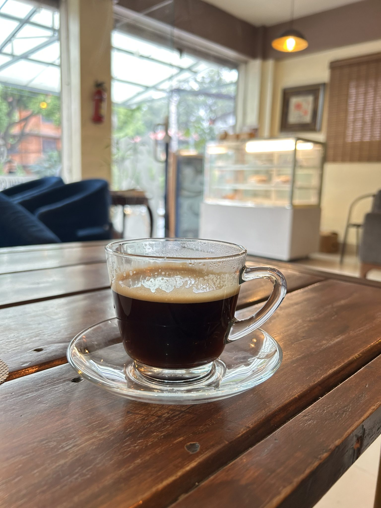
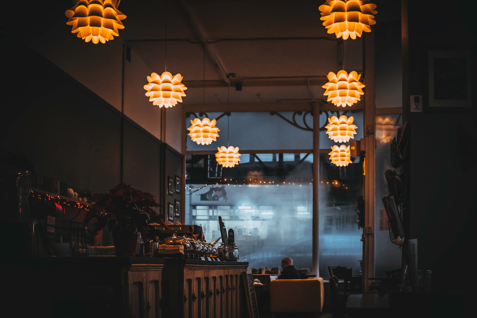
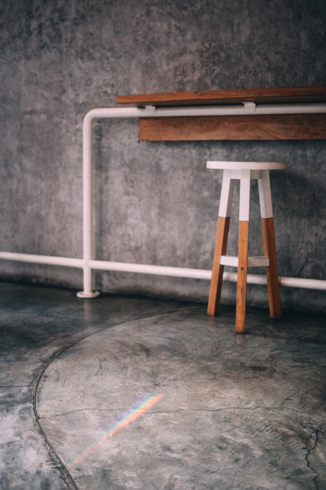

メインブロック
隠れた名店、と呼ばれる理由。
真鯛のポアレ
パリッと焼き上げた真鯛に、酸味を効かせたホワイトソースを合わせた一皿。ランチではスープ・サラダ・ドリンク・ライスが付いたセットでお楽しみいただけます(価格目安:約1,600円 ※確定額は店舗にご確認ください)。「隠れた名店」と評していただくことも多い、当店を代表する一皿です。
一歩お店に入ると、時間の流れが少しゆっくりになる気がします。木の椅子とレザーシート、琥珀色に灯る照明。まるで昔ながらの喫茶店に迷い込んだような、どこか懐かしい空気が漂う店内です。「ジブリの世界に溢れた雰囲気」「紅の豚が好きな人にはたまらない」と、多くのお客様が口を揃えて教えてくださる、そんな懐かしさとイタリアンが同居する空間です。
流山という土地に根を下ろし、長く愛されてきた隠れ家。ランチどきには満席になることも少なくありません。それでも慌ただしさは感じさせず、一人でゆったり過ごす方も、友人とおしゃべりを楽しむ方も、それぞれのペースで長居できる懐の深さがあります。
メニューにない料理でも、可能な範囲で相談に応じる柔軟さも、この店が長く愛されている理由のひとつです。かしこまらず、けれど丁寧に。流山のまちで、そんな距離感の食堂でありたいと思っています。


熱々のうちにアルデンテでお出しする、当店のランチの人気メニュー。クリーミーなソースと明太子の塩気が、麺としっかり絡みます。
とろけるチーズとジューシーなトマトが決め手のピザ。ボリューム満点でリーズナブルな価格帯も好評です。地元のお客様同士でシェアしながら楽しむのもおすすめです。


Google評価 4.2(口コミ77件)
★★★★★
以前からずっと気になっていたお店に、やっと来店。ランチは真鯛のポアレのセットを注文。サラダ・スープ・ドリンク・ライスが付いて約1,600円ほどでとてもリーズナブル。鯛のポアレはパリッとした食感で、少し酸味のあるホワイトソースとの相性が抜群でした。内装はジブリで溢れた世界観があって、実は隠れた名店だと思います。
★★★★☆
席や椅子が喫茶店風で、落ち着いた雰囲気。山菜の和風オイルソースのパスタは山菜がたっぷり入っていて、真ん中には刻み海苔。麺の茹で加減もちょうど良かったです。お店を出る頃には満席になっていました。
★★★★★
ランチの明太子クリームソースパスタは熱々のアルデンテで最高。店内は落ち着いた雰囲気で、静かに食事を楽しむのも、友人とおしゃべりを楽しむのも良い空間です。「紅の豚」が好きな人には、なお楽しめると思います。ランチメニューにないカルボナーラもお願いして作っていただけました。クリーミーでベーコンが効いたオーソドックスな味わいで、大満足でした。
★★★★★
ピザのチーズとトマトがとてもジューシー。他のお料理もボリューミーなのにリーズナブルで、地元のお客様同士で大満足の食事になりました。
| 店名 | イタリアンダイニング Bosco Rosso |
|---|---|
| 住所 | 千葉県流山市 ※番地等の詳細は準備中 |
| 電話番号 | 04-7154-2102(タップで発信) |
| 営業時間 | ※準備中 |
| 定休日 | ※準備中 |
| 駐車場 | ※準備中 |
上記の営業時間・定休日・駐車場情報は現在確認中です。最新情報はお電話にてお問い合わせください。
電話で問い合わせるお電話でのご予約・お問い合わせを承っております。営業時間内にお気軽にお電話ください。
最新のメニューや店内の様子は Instagram でもご紹介しています。ぜひご覧ください。
一部の写真はフリー素材のイメージです。実際の店内・お料理写真は貴店ご提供のものに差し替えます。